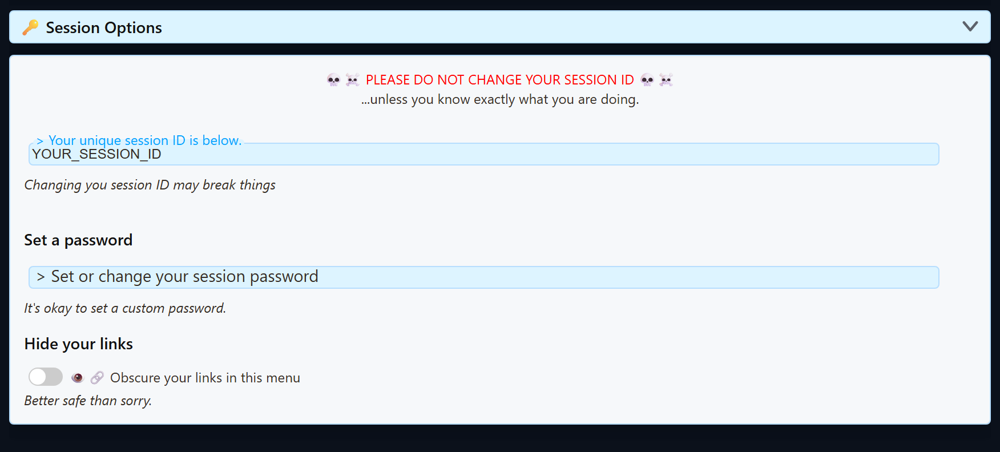

連線模型
- 來源擷取聊天或事件，並發布至 Social Stream 工作階段。
- 停駐面板、精選疊加畫面、多類型提醒、Event Flow 與其他頁面加入同一工作階段。
- 如果設定了密碼，每個加入的頁面都必須使用相同密碼。
- 如果啟用了伺服器路由，作用中的頁面必須使用帶有相符路由參數的新產生 URL。
Source → same session ID + password + routing mode → Dock / overlay / API consumer工作階段 ID 與密碼
開啟 全域設定與工具 → 工作階段選項 以查看目前工作階段 ID 並設定選用密碼。

| 值 | 規則 |
|---|---|
| 工作階段 ID | 保持不變，除非您打算取代所有使用它的來源、停駐面板、疊加畫面與整合 URL。 |
| 密碼 | 選用，但設定後必須在所有位置一致。新增或變更後，複製新產生的連結。 |
| 產生的連結 | 連結包含密碼或其他敏感參數時，應將整個連結視為私人資訊。 |
優先複製產生的 URL。 它們已包含目前工作階段、密碼、頁面版本與受支援的路由選項。手動編輯連結是頁面空白的常見原因。
啟用讀取與回覆的伺服器備援
停駐面板或統一聊天已連線卻收不到訊息，或因正常點對點路徑被封鎖或不可靠而回覆失敗時，使用此功能。
兩個備援控制項需搭配使用： 將聊天訊息傳送至 API 伺服器（供外部監聽器使用） 將傳入聊天送往伺服器路徑，而 停駐面板透過伺服器向擴充功能傳送指令 將回覆與停駐面板命令傳回。
快速方法
- 開啟或重新載入產生的停駐面板連結。
- 從 Social Stream Ninja 傳送一則模擬測試訊息。
- 如果 啟用伺服器備用模式 提示出現時，選擇並確認。Social Stream Ninja 會同時啟用傳入聊天與回覆命令的伺服器路徑。
- 複製新產生的停駐面板與疊加畫面連結。重新開啟一般瀏覽器視窗，並 取代所有已儲存的 OBS 瀏覽器來源 URL.
桌面應用程式中的手動方法
- 開啟 Social Stream 桌面應用程式。在右側的 來源與設定 面板中，展開 全域設定與工具.
- 展開 運作方式 - 連線與整合.
- 開啟 將聊天訊息傳送至 API 伺服器（供外部監聽器使用）。這是傳入聊天／讀取路徑。
- 開啟 停駐面板透過伺服器向擴充功能傳送指令。這是回覆／控制路徑。
- 複製並重新開啟新產生的連結。已開啟的舊頁面與儲存的 OBS URL 不會自行更新。

不要啟用所有伺服器選項。 啟用遠端 API 控制, 允許停駐面板透過 API 伺服器使用和發佈以及暫時附加傳遞選項，都不是正常讀寫備援所必需的。附加傳遞可能產生重複訊息。
預設、中繼與 API 伺服器模式
| 控制 | 變更內容 | 何時使用 |
|---|---|---|
| 預設連結 | 正常的 Social Stream 對等／工作階段傳輸，不新增伺服器旗標。 | 大多數單機與一般 OBS 設定。 |
| 啟用透過遠端 API 控制擴充功能 | 啟用擴充功能 HTTP／WebSocket 控制與傳入 Webhook 處理。 | 外部應用程式、Stream Deck／API 控制，或受支援的傳入贊助 Webhook。 |
| 允許停駐面板透過 API 伺服器使用和發佈 | 新增頁面的 server 路由（在支援時）。 |
停駐面板／精選工作流程需要遠端 API 伺服器控制，而非正常路徑。 |
| 將聊天訊息傳送到 API 伺服器 | 將擷取的聊天路由至 API 伺服器監聽器路徑，並新增 server2 到支援的產生連結中。 |
停駐面板需要伺服器備援來接收傳入聊天，或 Python、Node 等外部 WebSocket 監聽器必須接收聊天。 |
| 同時正常傳送透過 API 路由的聊天 | 透過兩條路徑進行暫時附加傳遞。 | 僅用於有意進行的混合模式過渡；它可能產生重複訊息。 |
| 透過伺服器傳送停駐面板命令 | 新增 server3 （在支援時），使停駐面板命令透過伺服器路徑返回。 |
對等連線被封鎖或不可靠，且停駐面板到擴充功能的命令需要透過伺服器。 |
關於 localserver
某些頁面接受 localserver 並使用位於下列位址的本機 WebSocket 端點： ws://127.0.0.1:3000。新增 localserverport=PORT 選擇 1024 到 65535 之間的其他連接埠。無效或省略的值會安全退回連接埠 3000。請注意，Social Stream 桌面應用程式的新安裝改用連接埠 3003 執行本機伺服器，並將 localserverport=3003 至產生的連結中，因此若為新安裝手寫 URL，請自行新增該參數。只有本機伺服器實際執行且該頁面支援這些參數時，才新增它們。
有關託管 WebSocket 或進階本機伺服器設定的螢幕擷取畫面與逐步說明，請參閱 託管 WebSocket 與本機伺服器模式.
路由參數因頁面而異。 server, server2, server3, localserver，以及 localserverport 在各疊加畫面上並非具有統一行為。請使用該具體頁面產生的 URL，不要從其他工具複製旗標。
變更工作階段或路由開關後
- 複製新產生的停駐面板或疊加畫面 URL。
- 關閉並重新開啟使用舊 URL 的作用中瀏覽器頁面。
- 取代已儲存 OBS 瀏覽器來源中的 URL，並重新整理其快取.
- 工作階段 ID 或密碼變更後，請重新載入或重新啟用來源頁面。
- 傳送一則模擬測試訊息，並在測試最終疊加畫面前確認其到達停駐面板。
停駐面板或疊加畫面空白檢查清單
- 比較完整的
session=值，分別在來源、停駐面板與疊加畫面中檢查。 - 檢查是否有某個 URL 缺少目前的
password=. - 檢查舊 OBS URL 是否缺少目前伺服器路由旗標。
- 如果模式不明確，請移除手動新增的路由旗標，並複製新產生的 URL。
- 先測試停駐面板。如果停駐面板收到訊息，再排查疊加畫面的事件篩選器與 URL 選項。
- 參閱 OBS 疑難排解 以及 命令與 API 參考 進行進一步檢查。